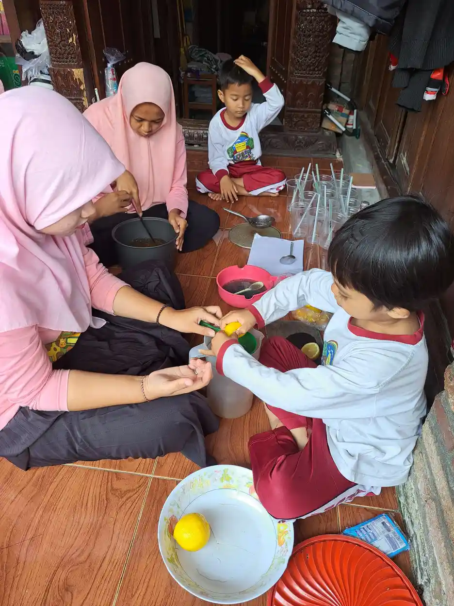
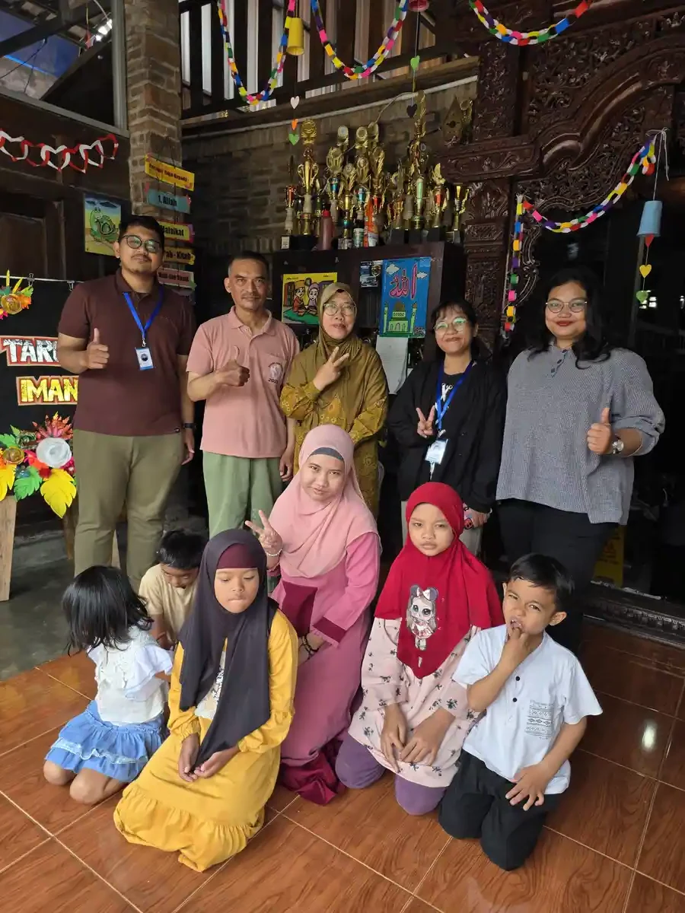

Ringkasnya: magang anak berkebutuhan khusus perlu berpusat pada pilihan peserta, tujuan belajar yang jelas, mentor, akomodasi, serta keselamatan. Bedakan pembelajaran lapangan dari pekerjaan berbayar dan jangan menjanjikan hasil kerja untuk semua orang.
Daftar Isi
- Magang adalah pengalaman belajar, bukan janji pekerjaan
- Tempatkan pilihan dan persetujuan peserta di awal
- Susun profil tugas dan dukungan secara fungsional
- Pilih mitra berdasarkan tugas nyata dan lingkungan aman
- Buat kesepakatan program yang dapat dipahami
- Bagi peran peserta, mentor, sekolah, dan keluarga
- Rancang akomodasi bersama, lalu uji kegunaannya
- Mulai dengan orientasi dan latihan tugas bertahap
- Siapkan perlindungan, keluhan, dan hak menghentikan tugas
- Evaluasi perkembangan, bukan hanya jumlah produksi
- Pahami hubungan magang dan supported employment
- Gunakan sumber resmi untuk hak dan akses layanan
- Hubungkan pengalaman dengan rumah dan sekolah
- Langkah berikutnya: rencana kecil yang dapat ditinjau
- Pertanyaan yang sering diajukan
Magang adalah pengalaman belajar, bukan janji pekerjaan
Magang anak berkebutuhan khusus sebaiknya dimulai dari pertanyaan tentang pengalaman yang ingin dipelajari peserta, bukan dari target agar ia segera menghasilkan barang atau terlihat mandiri. Bagi remaja dan orang muda penyandang disabilitas, kesempatan mengenal lingkungan kerja dapat membantu menghubungkan pelajaran dengan kehidupan sehari-hari. Namun, kegiatan di luar sekolah harus mempunyai tujuan, pendamping, perlindungan, dan cara evaluasi yang jelas. Istilah anak pada judul ini mengikuti pencarian keluarga, bukan alasan memperlakukan peserta yang sudah dewasa sebagai anak kecil.
Bedakan kunjungan pengenalan profesi, latihan keterampilan di sekolah, praktik kerja lapangan sebagai pembelajaran, pemagangan ketenagakerjaan, dan pekerjaan berbayar. Nama yang mirip tidak membuat status, aturan, atau haknya sama. Panduan PKL Direktorat PKPLK menempatkan murid sebagai pusat pembelajaran dan membahas perencanaan, pelaksanaan, serta evaluasi sesuai kebutuhan murid SLB/SMALB. Panduan itu bukan pengumuman bahwa semua peserta harus menjalani pengalaman yang seragam.
Keluarga perlu menanyakan status program sebelum menyetujui kegiatan. Siapa penanggung jawabnya, apa yang dipelajari, dan apa yang tidak boleh dikerjakan? Bila jawabannya hanya “membantu usaha”, tujuan belajar perlu diperjelas. Keberhasilan juga dapat berupa mengenali ketidakcocokan lingkungan, menyampaikan kebutuhan istirahat, atau memilih jalur belajar lain. Hasil seperti ini tetap berguna meskipun belum berujung pekerjaan.
Tempatkan pilihan dan persetujuan peserta di awal
Mengenal calon peserta perlu dilakukan sebelum mencari tempat: gali minat, kekuatan, pengalaman, dan kebutuhan dukungannya. Gunakan perencanaan yang berpusat pada individu, bukan daftar pekerjaan berdasarkan diagnosis. Kesukaan memasak, misalnya, belum otomatis berarti seseorang ingin bekerja di dapur yang panas dan bising. Ia mungkin lebih tertarik menyusun resep, mengemas produk, atau mempelajari kegiatan lain sama sekali.
Jelaskan pilihan dengan bahasa yang dipahami peserta. Foto tempat, contoh alat, jadwal sederhana, atau kunjungan bersama dapat membantu ia membayangkan kegiatan. Tanyakan apa yang menarik, mengganggu, dan ingin dicoba. Beri waktu menjawab tanpa membiarkan keluarga selalu menjawab lebih dahulu. Peserta yang menggunakan gestur, gambar, tulisan, atau alat komunikasi tetap harus dilibatkan; dukungan seperti komunikasi augmentatif dan alternatif dapat menjadi bagian dari proses menyampaikan pilihan.
Persetujuan bukan sekali tanda tangan lalu berlaku untuk semua perubahan. Bila tugas, jam, lokasi, atau pendamping berganti, jelaskan kembali dan dengarkan tanggapan peserta. Bagi peserta yang masih anak, sekolah dan wali perlu memastikan perlindungan sesuai usia serta ketentuan program. Bagi peserta dewasa, hormati keputusan dan privasinya. Pendamping membantu memahami pilihan, bukan mengambil alih kehidupan seseorang karena ia membutuhkan bantuan.

Susun profil tugas dan dukungan secara fungsional
Profil awal sebaiknya menggambarkan apa yang membantu seseorang belajar dan berpartisipasi. Catat cara menerima instruksi, cara bertanya, kebutuhan akses fisik, toleransi terhadap kondisi lingkungan, serta dukungan saat berpindah kegiatan. Jangan menjadikan angka IQ atau label diagnosis sebagai satu-satunya penentu pekerjaan. Dua orang dengan diagnosis sama dapat memiliki minat, pengalaman, dan kebutuhan akomodasi yang berbeda. Pembahasan disabilitas intelektual membantu memahami kebutuhan dukungan, tetapi tidak menggantikan pengenalan individu.
Lakukan pengamatan melalui tugas yang aman dan bermakna. Contohnya, peserta mencoba mencocokkan label dengan contoh, menata alat, atau mengikuti urutan membersihkan meja. Catat kondisi saat tugas dilakukan: apakah tersedia contoh, petunjuk gambar, waktu tambahan, atau bantuan pendamping? Tanpa konteks tersebut, tulisan “bisa” atau “tidak bisa” mudah menyesatkan. Keterampilan juga dapat berubah ketika alat, tempat, dan orang yang memberi instruksi berbeda.
Hasil pengamatan bukan ujian untuk membuktikan kelayakan memperoleh kesempatan. Gunakan hasilnya untuk menentukan penyesuaian dan tujuan belajar berikutnya. Sepakati informasi apa yang boleh diberikan kepada mitra. Umumnya, penjelasan tentang cara komunikasi, dukungan keselamatan, dan akomodasi lebih berguna daripada membagikan seluruh catatan medis atau riwayat keluarga. Simpan informasi pribadi secara terbatas dan hanya bagikan kepada orang yang memang membutuhkannya untuk mendukung peserta.
Pilih mitra berdasarkan tugas nyata dan lingkungan aman
Sekolah dapat menilai calon mitra dengan mendatangi lokasi, berbicara dengan calon mentor, dan melihat alur kerja yang sebenarnya. Jangan memilih hanya karena pemilik usaha bersedia menerima peserta. Perhatikan akses masuk, toilet, tempat istirahat, jalur evakuasi, pencahayaan, suara, serta transportasi. Tanyakan pula kesediaan rekan kerja memberi instruksi yang jelas dan menerima alat komunikasi atau jadwal yang disesuaikan. Lingkungan yang ramah ketika kunjungan belum tentu sama ketika jam sibuk.
Tugas harus sesuai minat, tujuan belajar, dan pengendalian risiko. Memegang benda panas, bahan kimia, alat tajam, mesin, atau mengangkat beban tidak menjadi aman hanya karena disebut latihan. Bila risiko tidak dapat dikendalikan atau pengawasan tidak tersedia, pilih tugas dan lokasi lain. Diskusi mengenai pilihan pekerjaan bagi penyandang disabilitas dapat memperluas gambaran, tetapi bukan daftar penempatan yang dijamin tersedia.
Hindari mengunci peserta pada jenis pekerjaan tertentu berdasarkan stereotip. Artikel pekerjaan dan kebutuhan dukungan orang autis perlu dibaca sebagai bahan eksplorasi, bukan ramalan kemampuan seseorang. Mintalah mitra menjelaskan manfaat belajar bagi peserta, siapa yang mengawasi, dan bagaimana keluhan ditangani. Menolak mitra yang belum siap adalah keputusan perlindungan, bukan kegagalan keluarga mencari kesempatan.
Buat kesepakatan program yang dapat dipahami
Sebelum mulai, sekolah atau penyelenggara dan mitra perlu memperjelas status kegiatan serta tanggung jawab masing-masing. Catat tujuan belajar, lokasi, jadwal, jenis tugas, mentor, dukungan yang disediakan, kontak darurat, biaya, dan cara mengakhiri kegiatan. Jelaskan dokumen itu kepada peserta dalam format yang dapat dipahami. Jangan menjadikan tanda tangan keluarga sebagai pengganti penjelasan kepada orang yang akan menjalani kegiatan.
Untuk skema pemagangan ketenagakerjaan, Permenaker Nomor 6 Tahun 2020 mengatur penyelenggaraan pemagangan di dalam negeri, termasuk perjanjian, pembimbingan, uang saku, keselamatan, dan jaminan sosial. Jangan menerapkan ringkasan aturan pemagangan perusahaan secara otomatis pada setiap PKL sekolah atau kunjungan belajar. Mintalah sekolah dan dinas ketenagakerjaan memastikan skema yang berlaku, persyaratan peserta, serta aturan terbaru sebelum kegiatan berlangsung.
Pembahasan biaya harus terbuka: siapa menanggung perjalanan, makan, alat pelindung, dan kebutuhan pendamping? Jangan menjanjikan nilai uang saku tanpa dokumen program. Perjelas juga izin foto dan penggunaan hasil karya. Peserta tidak wajib menjadi bahan promosi untuk memperoleh kesempatan belajar. Jika mitra menawarkan pengangkatan kerja setelah kegiatan, catat bahwa proses itu terpisah dan bergantung pada persyaratan serta kesepakatan kerja yang sah, bukan janji otomatis dari program belajar.

Bagi peran peserta, mentor, sekolah, dan keluarga
Peran pendamping kerja dalam artikel historis tetap relevan: ia bekerja ke dua arah, membantu peserta memahami tugas sekaligus membantu pemberi kerja menyiapkan dukungan. Mentor di lokasi menjelaskan prosedur, memberi contoh, memantau keselamatan, dan menyampaikan umpan balik. Guru pembimbing menghubungkan pengalaman dengan tujuan pembelajaran serta memastikan masalah ditindaklanjuti. Keluarga dapat membantu perjalanan dan rutinitas di rumah tanpa harus menjadi pengawas penuh di tempat kerja.
Peserta mempunyai peran aktif: menyampaikan pilihan, mencoba tugas yang disepakati, menanyakan hal yang belum jelas, dan melaporkan kondisi tidak aman dengan cara komunikasinya sendiri. Kewajiban ini perlu diajarkan dan didukung, bukan dituntut tanpa akses. Pemberi kerja bertanggung jawab pada lingkungan, pembimbingan, dan perlindungan; kesulitan peserta tidak membebaskan perusahaan dari peran tersebut. Jangan menimpakan semua tanggung jawab kepada keluarga ketika instruksi di lokasi belum dapat diakses.
Tentukan satu jalur komunikasi yang diketahui semua pihak dan satu pengganti mentor bila mentor utama berhalangan. Panduan PKL bagi murid penyandang disabilitas menjelaskan kolaborasi guru dan pendamping dari dunia kerja dalam perencanaan, pelaksanaan, serta asesmen. Prinsip kolaborasi ini dapat membantu mencegah peserta menerima instruksi yang saling bertentangan. Pembagian peran harus tertulis cukup jelas agar persoalan tidak berakhir dengan saling menunggu.
Rancang akomodasi bersama, lalu uji kegunaannya
Akomodasi adalah penyesuaian untuk mengurangi hambatan individu, bukan hadiah karena peserta berperilaku baik. Panduan penyesuaian tempat kerja ILO mencakup penyesuaian alat, isi pekerjaan, waktu, dan organisasi kerja. Karena kebutuhan berbeda, tanyakan apa yang membantu peserta dan uji dalam kegiatan nyata. Daftar akomodasi bukan resep yang harus diberikan kepada semua penyandang disabilitas.
Contoh penyesuaian dapat berupa instruksi tertulis sederhana, contoh hasil jadi, urutan gambar, satu pemberi instruksi, atau waktu pemrosesan sebelum jawaban diminta. Untuk akses fisik, pertimbangkan tinggi meja, ruang bergerak, dan posisi alat. Untuk komunikasi, sepakati kata atau simbol yang berarti berhenti, bantuan, toilet, dan selesai. Bila diperlukan tempat istirahat yang lebih tenang, jelaskan cara mengaksesnya tanpa mempermalukan peserta di depan rekan kerja.
Nilai apakah penyesuaian benar-benar digunakan dan mengurangi hambatan. Jadwal gambar yang terlalu ramai atau bahasa yang terlalu panjang dapat menjadi beban tambahan. Minta peserta memberi tanggapan, lalu perbaiki bersama mentor. Jika penyesuaian memengaruhi prosedur keselamatan, libatkan penanggung jawab yang kompeten sebelum diterapkan. Dukungan bukan berarti menghapus seluruh standar tugas, melainkan membuat proses belajar dan penilaian lebih adil sambil menjaga keselamatan semua orang.
Mulai dengan orientasi dan latihan tugas bertahap
Pada awal kegiatan, kenalkan lokasi, orang yang dapat dimintai bantuan, tempat menyimpan barang, fasilitas pribadi, dan titik berkumpul saat darurat. Tunjukkan cara mengetahui tugas berikutnya. Beri kesempatan mencoba rute dan bertanya sebelum situasi menjadi sibuk. Peserta tidak perlu menghafal semua aturan dalam satu penjelasan. Catatan sederhana atau foto area yang diizinkan dapat membantu mengingat tanpa membuka data pribadi orang lain.
Pelatihan tugas dapat dimulai dari contoh, percobaan bersama, kemudian kesempatan mencoba dengan bantuan yang disepakati. Pecah tugas menjadi langkah yang masuk akal dan jelaskan tanda selesai. Contoh hipotetisnya adalah memeriksa kebersihan wadah, memasang label sesuai contoh, lalu meletakkannya di tempat tertentu. Ini contoh cara menyusun latihan, bukan laporan kegiatan atau kemampuan peserta YUKA. Tugas berisiko tetap memerlukan pengendalian dan pengawasan tersendiri.
Bantuan dikurangi hanya ketika pengamatan dan tanggapan peserta mendukungnya. Menghapus petunjuk gambar agar peserta terlihat mandiri bukan tujuan yang tepat bila petunjuk itu masih berguna. Belajar menggunakan dukungan secara efektif juga merupakan keterampilan. Latihan di rumah seperti keterampilan merawat pakaian dapat mengembangkan pengalaman mengikuti urutan, tetapi keterampilan di rumah tidak boleh dianggap otomatis berpindah ke semua lingkungan kerja.

Siapkan perlindungan, keluhan, dan hak menghentikan tugas
Rencana keselamatan harus menjelaskan risiko tugas, alat pelindung, pengawasan, serta tindakan bila terjadi cedera, kehilangan kontak, atau perubahan kondisi kesehatan. Ajarkan tanda bahaya dan cara meminta bantuan dengan demonstrasi yang sesuai. Pastikan peserta mengetahui bahwa ia boleh menjauh dari tugas tidak aman dan menghubungi orang yang dipercaya. Jangan menyamakan kepatuhan tanpa pertanyaan dengan kesiapan kerja.
Pelecehan, ejekan, bentakan, ancaman, dan sentuhan yang tidak dikehendaki bukan bagian wajar dari latihan disiplin. Sediakan saluran keluhan yang tidak hanya bergantung pada orang yang sedang dikeluhkan. Sekolah dan keluarga perlu mendengarkan perubahan pengalaman peserta tanpa langsung menyalahkannya. Catat kejadian secara faktual dan batasi penyebaran identitas. Bila ada ancaman keselamatan atau kekerasan, hentikan paparan dan cari bantuan layanan yang berwenang sesuai situasi.
Perhatikan pula perjalanan pulang pergi dan kelelahan setelah kegiatan. Kesulitan datang tepat waktu dapat berkaitan dengan transportasi atau jadwal yang belum sesuai, bukan semata kurang motivasi. Kebutuhan obat dan informasi kesehatan ditangani bersama pihak yang berwenang dengan menjaga privasi. Bila dukungan keselamatan tidak tersedia, kegiatan perlu ditunda atau diubah. Tujuan belajar tidak membenarkan mempertahankan peserta dalam keadaan yang membahayakan dirinya atau orang lain.
Evaluasi perkembangan, bukan hanya jumlah produksi
Penilaian sebaiknya kembali pada tujuan yang disepakati. Catat proses memahami instruksi, menggunakan alat bantu, meminta bantuan, menyelesaikan langkah, dan mengenali batas aman. Sertakan jenis dukungan yang masih digunakan. Jumlah barang yang selesai saja tidak menjelaskan apakah peserta belajar, kelelahan, atau sekadar mengikuti bantuan penuh dari orang lain. Umpan balik mentor perlu dibandingkan dengan pengalaman peserta, bukan dianggap satu-satunya ukuran.
Gunakan catatan singkat dengan bahasa yang deskriptif. Alih-alih “tidak disiplin”, tulis kondisi yang diamati, misalnya peserta meninggalkan meja ketika suara mesin meningkat dan kembali setelah mendapat tempat lebih tenang. Catatan semacam ini membantu membedakan kebutuhan penyesuaian lingkungan dari kebutuhan latihan tambahan. Hindari menuliskan dugaan diagnosis baru atau penilaian karakter yang tidak dapat dibuktikan dari pengamatan tersebut.
Dalam pertemuan evaluasi, tanyakan kegiatan yang ingin dilanjutkan, dihentikan, atau dicoba berbeda. Tentukan langkah berikutnya bersama peserta: menambah variasi tugas, mempertahankan dukungan, mengganti lokasi, atau kembali pada latihan sekolah. Tabel berikut adalah contoh alat perencanaan, bukan standar penilaian nasional atau jaminan lulus. Sekolah perlu menyesuaikannya dengan kurikulum dan kebutuhan individu. Evaluasi yang baik juga menilai kesiapan mentor dan lingkungan, bukan hanya menilai peserta.
| Hal yang diamati | Bukti dan dukungan yang dicatat | Tindak lanjut |
|---|---|---|
| Memahami urutan | Langkah yang dicoba dengan contoh atau kartu gambar | Perbaiki urutan bila masih membingungkan |
| Meminta bantuan | Cara peserta menghubungi mentor dan tanggapan mentor | Pastikan saluran bantuan selalu dapat diakses |
| Keselamatan | Risiko yang ditemukan dan pengendalian yang tersedia | Hentikan tugas bila pengendalian belum memadai |
| Pilihan peserta | Tugas yang disukai atau ditolak beserta alasannya | Sesuaikan rencana dengan pilihan dan tujuan belajar |
Pahami hubungan magang dan supported employment
Supported employment atau pekerjaan dengan dukungan merupakan pembahasan utama versi historis artikel ini. Pokok yang tetap penting adalah dukungan tidak berhenti setelah seseorang masuk ke tempat kerja. Pendamping dapat membantu mengenali minat, mencocokkan tugas, melatih di lokasi, dan berkomunikasi dengan pemberi kerja. Namun, pekerjaan berbayar dengan dukungan tidak sama dengan magang sekolah. Jangan menyebut peserta sudah bekerja jika statusnya masih pembelajaran.
Tinjauan Cochrane tentang rehabilitasi vokasional mempelajari orang dewasa dengan gangguan jiwa berat. Kajian tersebut mendukung manfaat pendekatan supported employment untuk memperoleh pekerjaan kompetitif dalam populasi yang diteliti. Temuan itu bukan bukti bahwa setiap metode yang sama pasti cocok bagi seluruh anak berkebutuhan khusus. Pelatihan awal yang aman dan bermakna juga tidak perlu ditinggalkan hanya karena suatu model menekankan pembelajaran di tempat kerja.
Studi Project SEARCH dengan dukungan autisme dan tinjauan sistematis Fong dan rekan memberi konteks penelitian yang lebih dekat dengan transisi orang autis. Bukti tetap terbatas pada peserta, program, dan lokasi studi. Karena itu, artikel ini tidak memakai hasil penelitian sebagai persentase peluang kerja peserta Indonesia atau janji hasil layanan YUKA. Pertanyaan praktisnya adalah dukungan apa yang tersedia, siapa yang menjaganya, dan apakah peserta memilih jalur tersebut.
Gunakan sumber resmi untuk hak dan akses layanan
UU Nomor 8 Tahun 2016 tentang Penyandang Disabilitas menjadi dasar penting penghormatan hak, aksesibilitas, dan akomodasi yang layak. Hak tidak bergantung pada apakah seseorang sudah produktif atau dapat melakukan tugas tanpa bantuan. Untuk memahami konteks pendidikan sebelum transisi, keluarga dapat membaca hak pendidikan anak dengan disabilitas intelektual dan membicarakan kebutuhan pembelajaran bersama sekolah.
Penjelasan Kemnaker tentang Unit Layanan Disabilitas bidang ketenagakerjaan menghubungkan layanan tersebut dengan PP Nomor 60 Tahun 2020 dan pedoman penyelenggaraannya. Bagi keluarga atau pemberi kerja, dinas ketenagakerjaan setempat dapat menjadi tempat menanyakan layanan, informasi, dan dukungan yang tersedia. Tanyakan nama unit, wilayah layanan, persyaratan, serta cara membuat janji, bukan mengasumsikan semua daerah mempunyai bentuk layanan yang sama.
Hindari menyimpulkan bahwa kuota ketenagakerjaan otomatis menyediakan tempat magang, menghapus persyaratan pekerjaan, atau menjamin pengangkatan setiap peserta. Bila ada persoalan status program, hak peserta, atau ketentuan usia, mintalah klarifikasi dari sekolah dan petugas ketenagakerjaan yang berwenang. Artikel ini memberikan orientasi umum, bukan penetapan hukum untuk kasus individual. Catat jawaban resmi dan sumber dokumen agar keputusan program dapat diperiksa kembali oleh peserta serta pihak yang mendampinginya.

Hubungkan pengalaman dengan rumah dan sekolah
Kemandirian tidak harus berarti melakukan semua hal sendiri. Seseorang dapat berkembang dengan mengenali kebutuhan, memilih cara bekerja, dan menggunakan dukungan yang tepat. Di rumah, keluarga bisa menyiapkan rutinitas yang disepakati seperti memilih pakaian, menata perlengkapan, dan memeriksa jadwal. Panduan membangun kemandirian sesuai kebutuhan anak dapat membantu percakapan ini tanpa menjadikan setiap kegiatan rumah sebagai tes kerja.
Sekolah perlu menyambungkan pengalaman lapangan dengan pembelajaran. Peserta dapat menceritakan kegiatan melalui tulisan, gambar, suara, atau alat komunikasi. Guru membantu mengenali keterampilan yang berkembang dan dukungan yang masih dibutuhkan. Prinsip pendidikan inklusi juga berarti menilai hambatan lingkungan, bukan meminta peserta menyesuaikan diri sendirian. Hasil kegiatan dapat menjadi bahan memperbaiki pembelajaran berikutnya, termasuk ketika tempat yang dicoba ternyata tidak sesuai.
Peran orang tua dalam pendidikan inklusi penting untuk menjaga kesinambungan, tetapi keluarga tidak harus menyelesaikan seluruh tantangan transisi tanpa bantuan. Mintalah pembagian tugas yang realistis. Diskusikan waktu, biaya, dan tenaga yang tersedia agar rencana tidak membebani peserta maupun keluarga. Pilihan melanjutkan pendidikan, latihan lain, kegiatan komunitas, pekerjaan dengan dukungan, atau usaha sendiri perlu dipertimbangkan sesuai minat dan konteks, bukan disusun sebagai urutan nilai martabat seseorang.
Langkah berikutnya: rencana kecil yang dapat ditinjau
Mulailah dari rencana yang cukup jelas untuk dilaksanakan dan cukup lentur untuk diubah. Ringkas pilihan peserta, tujuan belajar, tempat, mentor, akomodasi, pengendalian risiko, serta cara evaluasi dalam dokumen yang mudah diakses. Pastikan peserta tahu siapa yang dapat dihubungi ketika bingung atau ingin berhenti. Bila ada bagian yang belum jelas, selesaikan sebelum kegiatan dimulai, bukan sambil berharap peserta akan menyesuaikan diri.
Bagi calon mitra, pertanyaan awal bukan “disabilitas apa yang paling mudah diterima”, melainkan tugas apa yang tersedia dan hambatan apa yang dapat diperbaiki. Dengarkan peserta dan sekolah, tunjuk mentor, serta sediakan waktu belajar. Kesempatan yang adil memerlukan kesiapan organisasi, bukan hanya niat baik. Bila belum mampu menyediakan kondisi aman, jelaskan batas tersebut secara terbuka dan cari bentuk kerja sama pendidikan lain yang lebih sesuai.
Keluarga yang ingin membahas persiapan belajar dan kemandirian dapat mengenal program YUKA dan menghubungi tim melalui halaman kontak. Sampaikan usia, minat, cara komunikasi, dan pertanyaan tentang dukungan yang dibutuhkan, tanpa mengirim seluruh dokumen pribadi pada pesan awal. Percakapan ini bukan pendaftaran penempatan magang atau jaminan pekerjaan. Ketersediaan layanan, kecocokan pendampingan, serta kemungkinan kerja sama harus dikonfirmasi langsung sebelum keluarga mengambil keputusan.
Pertanyaan yang Sering Diajukan
Apa tujuan magang anak berkebutuhan khusus?
Tujuannya adalah pengalaman belajar yang aman dan bermakna sesuai pilihan peserta, misalnya mengenal tugas, berkomunikasi dengan mentor, serta menggunakan dukungan. Magang tidak menjamin pengangkatan kerja dan tidak menjadi ukuran nilai atau martabat seseorang.
Apakah semua anak berkebutuhan khusus harus mengikuti magang?
Tidak. Bentuk pengalaman ditentukan bersama peserta berdasarkan usia, minat, tujuan belajar, kebutuhan dukungan, keselamatan, serta ketentuan program. Kunjungan profesi, latihan sekolah, atau jalur pembelajaran lain dapat lebih sesuai dalam situasi tertentu.
Apa perbedaan PKL, pemagangan, dan supported employment?
PKL sekolah merupakan pembelajaran lapangan, sedangkan pemagangan ketenagakerjaan mempunyai ketentuan program dan perjanjian tersendiri. Supported employment berfokus pada memperoleh dan mempertahankan pekerjaan berbayar dengan dukungan. Status dan hak masing-masing harus diperjelas sebelum kegiatan dimulai.
Apakah diagnosis atau IQ menentukan jenis pekerjaan peserta?
Tidak dapat ditentukan dari label atau angka itu saja. Pemilihan tugas perlu mempertimbangkan pilihan individu, keterampilan yang diamati, akses lingkungan, kebutuhan akomodasi, serta pengendalian risiko. Orang dengan diagnosis sama dapat membutuhkan dukungan dan memilih bidang yang berbeda.
Apa tanggung jawab mentor dan pemberi kerja?
Mentor memberi instruksi yang dapat diakses, contoh tugas, umpan balik, dan pengawasan sesuai kebutuhan. Pemberi kerja menyiapkan lingkungan aman, akomodasi yang disepakati, serta jalur keluhan. Tanggung jawab tersebut tidak boleh seluruhnya dipindahkan kepada peserta atau keluarga.
Bagaimana jika peserta tidak nyaman atau ingin berhenti?
Dengarkan melalui cara komunikasi yang digunakan peserta, periksa penyebabnya, dan hentikan paparan yang tidak aman. Sekolah, mentor, dan peserta dapat meninjau tugas, jadwal, akomodasi, atau lokasi. Mengubah atau menghentikan program bukan alasan mempermalukan peserta.
Apakah YUKA menjamin tempat magang atau pekerjaan?
Artikel ini tidak menawarkan atau menjamin penempatan magang maupun pekerjaan. Keluarga dapat menghubungi YUKA untuk membahas kebutuhan belajar dan kemandirian. Bentuk layanan, ketersediaan, kecocokan, dan kemungkinan kerja sama perlu dikonfirmasi langsung.
Bacaan Terkait
Sumber dan Referensi
- Direktorat PKPLK, Kemendikdasmen: Panduan PKL bagi Murid Penyandang Disabilitas
- Panduan PKL bagi Murid Penyandang Disabilitas, cetakan pertama November 2025 (PDF)
- JDIH Kemnaker: Permenaker Nomor 6 Tahun 2020 tentang Penyelenggaraan Pemagangan di Dalam Negeri
- Kemnaker: Unit Layanan Disabilitas Bidang Ketenagakerjaan
- ILO: Promoting diversity and inclusion through workplace adjustments: A practical guide
- JDIH BPK: UU Nomor 8 Tahun 2016 tentang Penyandang Disabilitas
- Suijkerbuijk dan rekan, 2017: Rehabilitasi vokasional pada orang dewasa dengan gangguan jiwa berat
- Wehman dan rekan, 2014: Project SEARCH plus ASD Supports, hasil awal uji acak
- Fong dan rekan, 2021: Tinjauan sistematis intervensi hasil kerja orang autis
Catatan: Artikel ini bersifat edukasi umum dan bukan pengganti konsultasi dengan psikolog, tenaga kesehatan, atau petugas layanan sosial resmi. Sumber ditelaah pada 17 Oktober 2026. Status program dan aturan yang berlaku perlu dikonfirmasi kepada sekolah atau dinas terkait. Foto adalah konteks kegiatan belajar, bukan bukti penempatan kerja.